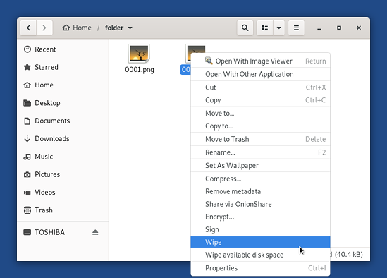
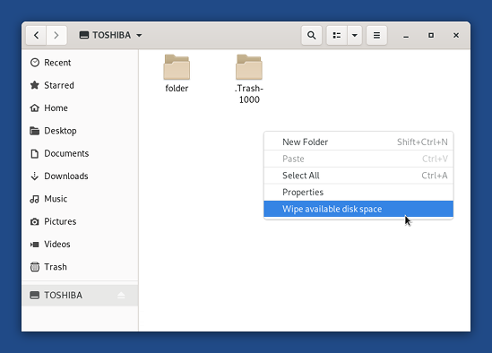
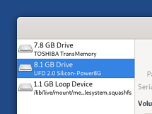

Why use secure deletion?
Operating systems do not actually remove the contents of a file when it is deleted, even after emptying the trash or explicitly removing the file, from the command line for example.
Instead, they simply remove the file's entry from the file system directory, because this requires less work and is therefore faster. The contents of the file—the actual data—remain on the storage medium. The data will remain there until the operating system reuses the space for new data.
Likewise, reformatting, repartitioning or reimaging a system is not always guaranteed to write to every area of the disk, though all will cause the disk to appear empty or, in the case of reimaging, empty except for the files present in the image, to most software.
Finally, even when the storage medium is overwritten, physical properties of the medium may make it possible to recover the previous contents. In most cases however, this recovery is not possible by just reading from the storage device in the usual way, but requires using laboratory techniques such as disassembling the device and directly accessing/reading from its components.
Quoted from Wikipedia: Secure file deletion.
Warning about USB sticks and solid-state disks
The only way to securely delete any data, even a single file, from a USB stick or an SSD (Solid-State Disk) is to securely erase the entire device.
For more details read the corresponding section of the Wikipedia article on Data erasure.
Securely delete files
Securely deleting files does not erase the potential backup copies of the file (for example LibreOffice creates backup copies that allow you to recover your work in case LibreOffice stops responding).
Open the Files browser.
Navigate to the folder containing the files that you want to delete.
Select the files that you want to delete with the mouse.
Right-click (on Mac, click with two fingers) on the files and choose .

Confirm.
The deletion will start. It can last from a few seconds to several minutes, according to the size of the files. Be patient…
Securely clean available disk space
In order to clean up the contents of all files that were previously suppressed but not securely deleted from a disk, it is also possible to securely clean all the free space on the disk.
This method does not work as expected on solid-state disks or USB sticks.
The disk or the folder may or may not contain other files. Those files will not be deleted during the operation.
Open the Files browser.
Click on the disk that you want to clean in the left pane to navigate to the root of this disk.
Click on the
 button in the title bar and choose
Show Hidden Files.
button in the title bar and choose
Show Hidden Files.If you want to empty the trash, delete the .Trash-1000 folder or similar.
Right-click (on Mac, click with two fingers) in empty space in the right pane and choose .

Confirm.
The cleaning starts. It can last from a few minutes to a few hours, according to the size of the available diskspace. Be patient…
Note that a file with a name similar to tmp.7JwHAyBvA9 is created in the folder. It is made as big as possible to use all the available diskspace and then securely deleted.
Securely erasing an entire device
This technique is the only way to securely delete any data, even a single file, from a USB stick or an SSD (Solid-State Disk).
Open the Disks utility.
All the current storage devices are listed in the left pane.
Plug in the USB stick or SSD that you want to securely delete.
A new device appears in the list of storage devices. Click on it:

Check that the description of the device on the right side of the screen corresponds to your device: its brand, its size, etc.
Click on the
 button
in the titlebar and choose Format Disk…
to erase all the existing partitions on the device.
button
in the titlebar and choose Format Disk…
to erase all the existing partitions on the device.In the Format Disk dialog:
Choose to Overwrite existing data with zeroes in the Erase drop-down list.
Choose Compatible with all systems and devices (MBR/DOS) in the Partitioning drop-down list.
Click Format….
In the confirmation dialog, make sure that the device is correct. Click Format to confirm.